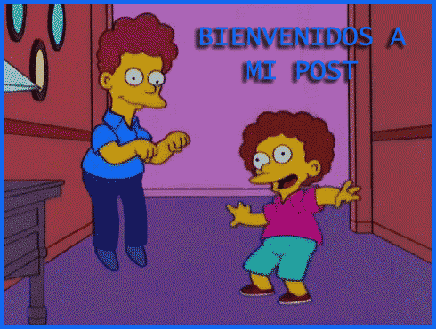

 Bienvenidos a la guia de como evitar ser abducido por un platillo volante.
1- No te pongas nunca ninguna prenda blanca con estampados negros, porque los aliens pueden confundirte con una vaca e ir a por ti, ya que suelen abducir a vacas muy a menudo
2- En el caso de que seas granjero o tenags cerca de tu casa alguna gran cosecha, mantente lejos de esta durante altas horas de la noche, ya que los aliens podrian hacer algun circulo en las cosechas y tu vida correria peligro
3- Nunca conduzcas de noche por carreteras que pasen por zonas totalmente despobladas, ya que podrian abducirte los aliens porque ellos suelen tener vigiladas esas zonas
4- Nunca te quites tu sombrero de aluminio, bajo ninguna circunstancia lo hagas, ya que podrian leerte la mente para que las elites reptilianas puedan controlarte
5- Por ultimo, nunca te fies de tus amigos y familia, todos son potencialmente seres reptilianos/aliens que quieren controlarte
Estas son las reglas basicas para sobrevivir hoy en dia y no ser nunca controlado por las elites, a continuaciion enseñare un video muy importante de como crear un sombrero de aluminio antiondas mentales
Aqui os dejo mi blog oficial Aqui os dejo mi blog personal,donde cuento mas de mi vida